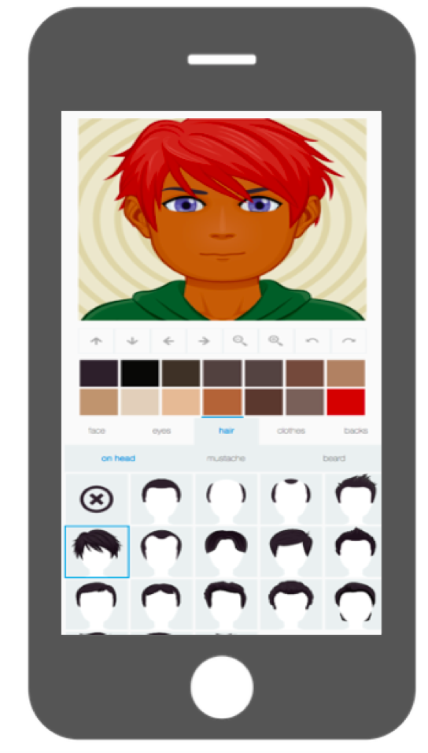
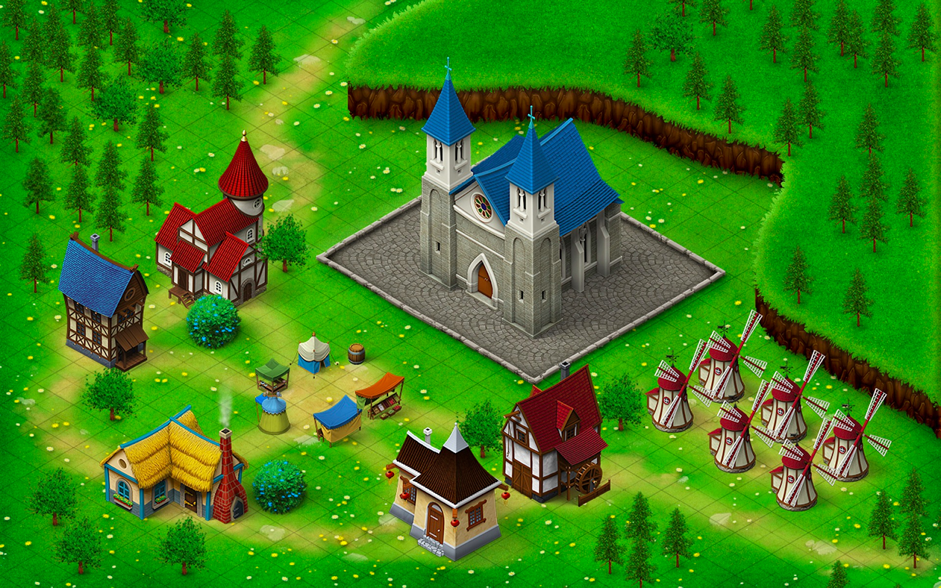

Sources
The following sources have been used for various purposes.
-
The word search game is based on this source
http://puzzlemaker.discoveryeducation.com/WordSearchSetupForm.asp?fbclid=IwAR1W-nFdhqzkVVr1pAjFk6OOepqpsqRmB0IjAtThe9GytVPVPrluDmQ-avw
-
The avatars on the characters page are based on this source

https://avatarmaker.com/
Picture sources
Some pictures are made up of several pictures from this list. Images not menitoned here are custom-made by the team.
-
Cook boy:
Used on the learning outcome and gallery pages
Retrieved from: https://www.needpix.com/photo/773895/cook-boy-cooking-kitchen-chef-child-little-fun-hat
Picture by: GraphicMama-team (pixabay.com)
-
Game map:

Used on the character, gallery and home pages
Retrieved from: https://pixabay.com/illustrations/map-game-map-green-background-3541045/
Picture by: Bumiputra
-
Pizza slice:
Used as part of the memory game image on the gallery page
Retrieved from: https://pixabay.com/no/vectors/pizza-mat-slice-ost-sjampinjong-23477/
Picture by: Clker-Free-Vector-Images -
Eggplant:
Used as part of the memory game image on the gallery page
Retrieved from: https://www.needpix.com/photo/94164/eggplant-vegetable-food-ingredient-plant
Picture by: OpenClipart-Vectors (pixabay.com) -
Banana:
Used as part of the memory game image on the gallery page
Retrieved from: https://pixabay.com/no/vectors/banan-gjeng-frukt-mat-bananer-gul-25339/
Picture by: Clker-Free-Vector-Images -
Mobil:
Used as frame around images on the gallery, learning outcome and characters pages
Retrieved from: https://pixabay.com/no/vectors/mobile-mobiltelefon-smartphone-1976104/
Picture by: janjf93